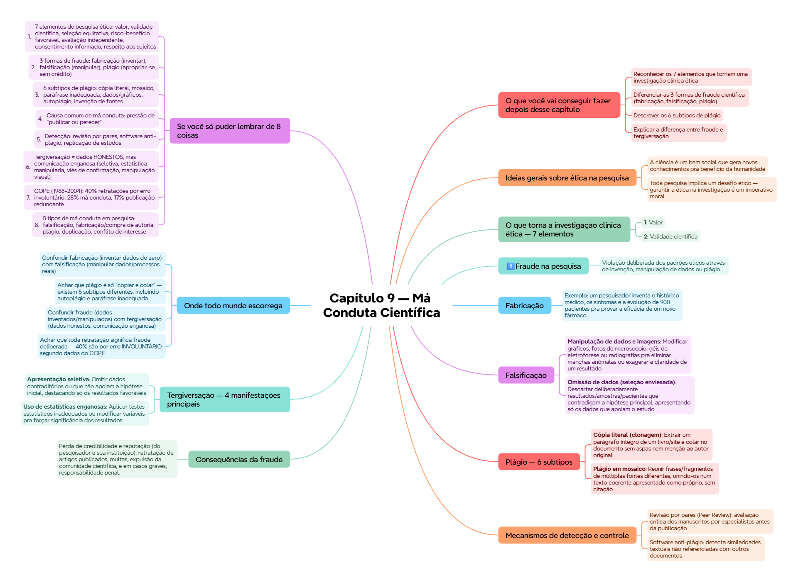

ClinicusMed · Dossiê Clinicus — Padrão de Excelência
Nv. 1
0 XP
🎯 O que você vai conseguir fazer depois desse capítulo
Reconhecer os 7 elementos que tornam uma investigação clínica ética
Diferenciar as 3 formas de fraude científica (fabricação, falsificação, plágio)
Descrever os 6 subtipos de plágio
Explicar a diferença entre fraude e tergiversação
Conhecer os mecanismos de detecção e as consequências da má conduta
Entender o papel da retratação na integridade científica
🔬 Ideias gerais sobre ética na pesquisa
A ciência é um bem social que gera novos conhecimentos pra benefício da humanidade
Toda pesquisa implica um desafio ético — garantir a ética na investigação é um imperativo moral
Princípios éticos em todo o processo de pesquisa NÃO devem ser considerados um freio, mas sim um VALOR
A relação entre ciência e sociedade se desvirtua toda vez que se cometem faltas éticas
As pesquisas devem ser conduzidas procurando identificar e prevenir faltas éticas
✅ O que torna a investigação clínica ética — 7 elementos
#
Elemento
Descrição
1
Valor
A pesquisa deve gerar conhecimento valioso
2
Validade científica
Grau em que um estudo/método/instrumento mede realmente o que pretende medir
3
Seleção equitativa do sujeito
Evitar discriminação e exploração de grupos vulneráveis
4
Proporção favorável risco-benefício
Minimizar danos possíveis, maximizar benefícios potenciais (individuais e sociais)
5
Avaliação independente
Realizada por especialistas sem conflito de interesses com o estudo
6
Consentimento informado
Já visto no Cap. 8
7
Respeito aos sujeitos inscritos
Durante toda a pesquisa
📌 A ética da investigação envolve tanto o respeito/proteção de quem participa da pesquisa quanto o comportamento moral do próprio pesquisador.
🚩 Má conduta científica — conceito
🟢 Definição: publicações científicas retiradas após a descoberta de (1) fraude, (2) tergiversação, ou outra má conduta relacionada à prática científica ou ao manejo de dados.
1️⃣ Fraude na pesquisa
Violação deliberada dos padrões éticos através de invenção, manipulação de dados ou plágio. Distorce o registro científico, desvia pesquisas futuras, desperdiça recursos públicos, e pode ter consequências devastadoras pra saúde pública.
3 formas principais de fraude: fabricação, falsificação, plágio.
📝 Fabricação
🟢 Definição: inventar dados ou resultados e registrá-los como se tivessem sido obtidos de uma pesquisa real.
Exemplo: um pesquisador inventa o histórico médico, os sintomas e a evolução de 900 pacientes pra provar a eficácia de um novo fármaco.
🔧 Falsificação
🟢 Definição: manipular materiais, equipamentos, processos, ou mudar/omitir dados pra que a pesquisa se ajuste aos resultados desejados.
Tipo
Exemplo
Manipulação de dados e imagens
Modificar gráficos, fotos de microscópio, géis de eletroforese ou radiografias pra eliminar manchas anômalas ou exagerar a claridade de um resultado
Omissão de dados (seleção enviesada)
Descartar deliberadamente resultados/amostras/pacientes que contradigam a hipótese principal, apresentando só os dados que apoiam o estudo
Alteração de variáveis e métodos
Ajustar condições (temperaturas, tempos, doses) pra encaixar no esperado, em vez de registrar o que realmente ocorreu. Também: descalibrar instrumentos ou forçar leituras
Fraude estatística e documental
Modificar procedimentos estatísticos ou aplicar ferramentas inválidas pra forçar significância estatística
📋 Plágio — 6 subtipos
🟢 Definição: apropriar-se das ideias, processos, resultados ou palavras de outra pessoa sem dar o crédito correspondente.
Subtipo
Descrição
Cópia literal (clonagem)
Extrair um parágrafo íntegro de um livro/site e colar no documento sem aspas nem menção ao autor original
Plágio em mosaico
Reunir frases/fragmentos de múltiplas fontes diferentes, unindo-os num texto coerente apresentado como próprio, sem citação
Paráfrase inadequada
Pegar o texto de um autor e só mudar algumas palavras/ordem gramatical, mantendo a ideia original sem referência
Plágio de dados e gráficos
Usar tabela/resultado estatístico/diagrama/imagem de outra publicação sem legenda da fonte original nem permissão de reprodução
Autoplágio
Reciclar trabalho/dados/fragmentos de artigo próprio JÁ publicado, apresentando como achado inédito numa nova pesquisa
Invenção de fontes
Citar informação real mas inventar uma fonte falsa, ou referenciar livro/artigo que não contém a informação mencionada
💡 Repare que o AUTOPLÁGIO também é uma forma de má conduta — reciclar seu próprio trabalho anterior sem declarar isso também é antiético.
💼 Causas comuns de má conduta
💭 Geralmente impulsionada pelo ambiente acadêmico/profissional, onde pesquisadores enfrentam forte pressão pra "publicar ou perecer", obter financiamentos, conseguir promoções, ou manter status em instituições de elite.
🔍 Mecanismos de detecção e controle
Revisão por pares (Peer Review): avaliação crítica dos manuscritos por especialistas antes da publicação
Software anti-plágio: detecta similaridades textuais não referenciadas com outros documentos
Replicação de estudos: tentativas de outros cientistas de repetir experimentos pra confirmar se os resultados são consistentes
⚠️ Consequências da fraude
Perda de credibilidade e reputação (do pesquisador e sua instituição), retratação de artigos publicados, multas, expulsão da comunidade científica, e em casos graves, responsabilidade penal.
2️⃣ Tergiversação na pesquisa científica
🟢 Definição: comunicar de maneira enganosa dados obtidos HONESTAMENTE — inclui uso de estatísticas manipuladas, extração de conclusões injustificadas, ou apresentação de resultados exagerando sua importância.
📌 A diferença fundamental entre FRAUDE e TERGIVERSAÇÃO: na fraude, os dados em si são inventados/manipulados na origem. Na tergiversação, os dados foram obtidos honestamente — o problema está em como são COMUNICADOS/INTERPRETADOS depois.
📊 Tergiversação — 4 manifestações principais
Manifestação
Descrição
Apresentação seletiva
Omitir dados contraditórios ou que não apoiam a hipótese inicial, destacando só os resultados favoráveis
Uso de estatísticas enganosas
Aplicar testes estatísticos inadequados ou modificar variáveis pra forçar significância dos resultados
Viés de confirmação
Interpretar os achados de forma subjetiva pra que coincidam com as expectativas do pesquisador
Manipulação visual
Alterar imagens/gráficos (além de ajustes básicos de brilho/contraste) pra eliminar informação e distorcer a evidência
3 causas da tergiversação: pressão institucional/profissional (publicar, financiamentos, promoções), interesses comerciais/financeiros (patrocinadores buscando resultados específicos), falta de rigor metodológico (deficiências no desenho experimental).
📉 Retratações — dados do COPE
Pesquisa do Comitê de Ética de Publicações (COPE) sobre retratações no Medline (1988-2004):
Causa
%
Erros involuntários
40%
Má conduta na pesquisa
28%
Publicação redundante
17%
Outras razões/não declaradas
15%
💭 Repare que a MAIORIA das retratações (40%) é por ERRO INVOLUNTÁRIO, não má conduta deliberada — é importante não presumir automaticamente fraude sempre que um artigo é retratado.
⚖️ Implicações da retratação — negativas e positivas
Negativas
Positivas
Pode causar dano à reputação (mesmo por erro involuntário), desestimulando admitir erros
Preserva a integridade/qualidade da pesquisa, evita propagação de erros em pesquisas futuras
Impacto financeiro e de recursos — pode ser caro e demorado, às vezes gera litígios
Protege a saúde/segurança públicas
Artigo retratado ainda disponível pode gerar confusão e ser citado sem perceber a invalidação
Fomenta responsabilidade entre autores/instituições — atua como dissuasor de práticas antiéticas
📋 Resumo — 5 tipos de má conduta em pesquisa
Tipo
Descrição
Falsificação
Manipulação de materiais/processos/dados pra distorcer resultados
Fabricação e compra de artigos/autoria
Informar resultados de experimentos que não foram realizados
Plágio
Apresentar ideias/palavras de outro como próprias
Duplicação/publicação redundante
Publicar o mesmo artigo em mais de uma revista, ou reciclar grandes seções de texto em mais de um artigo
Conflito de interesse
Não revelar conflitos financeiros, problemas de autoria ou outros que poderiam ter influenciado os resultados
O COPE (Committee on Publication Ethics) assessora e orienta editores/publicadores de revistas científicas sobre as melhores práticas em ética na publicação.
✅ O que você deve lembrar
3 formas de fraude: fabricação (inventar), falsificação (manipular), plágio (roubar crédito). Tergiversação = dados honestos, comunicação enganosa. 40% das retratações são por erro involuntário, não fraude.
⚠️ Erro comum
Confundir fraude com tergiversação — na fraude os DADOS são inventados/manipulados na origem; na tergiversação os dados são honestos, mas a COMUNICAÇÃO/interpretação é enganosa.
⚡ Questão rápida
Por que o autoplágio é considerado má conduta científica, já que o pesquisador está usando seu próprio trabalho?
Porque o problema não é sobre "roubar" ideias de outra pessoa, mas sim apresentar um trabalho já publicado como se fosse um achado INÉDITO numa nova pesquisa — isso distorce o registro científico, infla artificialmente a produção científica aparente do pesquisador, e pode enganar leitores/avaliadores que pensam estar diante de conhecimento novo quando na verdade é uma repetição não declarada de conteúdo já existente.
🧠 Autoexplicação
Por que faz sentido que a retratação de um artigo científico traga tanto consequências positivas quanto negativas, ao invés de ser simplesmente "boa" ou "ruim"?
A retratação envolve uma tensão real entre diferentes valores importantes do sistema científico. Por um lado, ela é fundamental para a INTEGRIDADE do conhecimento científico coletivo — sem um mecanismo de retratação, erros (sejam por má conduta ou por engano honesto) poderiam se perpetuar indefinidamente na literatura, sendo citados e influenciando pesquisas futuras, políticas públicas, e até práticas clínicas, com potencial dano real à saúde e segurança das pessoas. Por outro lado, o PROCESSO de retratação tem custos reais: pode ser caro e demorado, pode gerar litígios legais, e — talvez mais preocupante — pode criar um ambiente onde pesquisadores têm MEDO de admitir erros honestos (lembrando que 40% das retratações são por erro involuntário, não má conduta), já que a retratação carrega um estigma de reputação mesmo quando o erro foi genuinamente não intencional. Esse desincentivo poderia, paradoxalmente, ATRASAR a correção de informação incorreta, já que pesquisadores relutantes em admitir erros podem demorar mais para reportá-los. Por isso, o sistema científico precisa equilibrar cuidadosamente a necessidade de proteger a integridade coletiva do conhecimento com a necessidade de criar um ambiente onde admitir erros honestos seja visto como parte normal e responsável do processo científico, não como um fracasso vergonhoso.
⚠️ Onde todo mundo escorrega
Confundir fabricação (inventar dados do zero) com falsificação (manipular dados/processos reais)
Achar que plágio é só "copiar e colar" — existem 6 subtipos diferentes, incluindo autoplágio e paráfrase inadequada
Confundir fraude (dados inventados/manipulados) com tergiversação (dados honestos, comunicação enganosa)
Achar que toda retratação significa fraude deliberada — 40% são por erro INVOLUNTÁRIO segundo dados do COPE
Esquecer que a retratação tem implicações tanto negativas (custo, estigma) quanto positivas (proteção da integridade científica)
📚 Se você só puder lembrar de 8 coisas
7 elementos de pesquisa ética: valor, validade científica, seleção equitativa, risco-benefício favorável, avaliação independente, consentimento informado, respeito aos sujeitos
3 formas de fraude: fabricação (inventar), falsificação (manipular), plágio (apropriar-se sem crédito)
6 subtipos de plágio: cópia literal, mosaico, paráfrase inadequada, dados/gráficos, autoplágio, invenção de fontes
Causa comum de má conduta: pressão de "publicar ou perecer"
Detecção: revisão por pares, software anti-plágio, replicação de estudos
Tergiversação = dados HONESTOS, mas comunicação enganosa (seletiva, estatística manipulada, viés de confirmação, manipulação visual)
COPE (1988-2004): 40% retratações por erro involuntário, 28% má conduta, 17% publicação redundante
5 tipos de má conduta em pesquisa: falsificação, fabricação/compra de autoria, plágio, duplicação, conflito de interesse
🩺 Caso Clínico Progressivo — Suspeita de Manipulação de Dados numa Pesquisa
Vamos acompanhar a Dra. Fabíola, revisora de um manuscrito científico, que percebe inconsistências suspeitas nos dados apresentados. O caso evolui em 3 níveis — clica em cada um pra ver como as coisas vão se desenrolando.
🧠 Mapa Mental — Má Conduta Científica
Visão geral do capítulo em formato visual — ideal pra revisão rápida antes da prova. O conteúdo completo, com explicações e exemplos, está no Guia de Estudo.

🃏 Flashcards — SM-2 real + interface Anki
O sistema guarda, no seu navegador, quais cards você já sabe bem e quais precisam voltar mais cedo — cada vez que você avalia um card, ele recalcula quando ele deve voltar.
Cartão 1 / 0Dominados: 0
PERGUNTA
RESPOSTA
✅ Banco de Questões Comentadas
10 questões, do mais básico ao mais puxado. Escolhe uma alternativa, depois clica em "Ver comentário completo" — vale a pena ler até quando você acerta, porque o comentário explica cada alternativa, não só a certa.